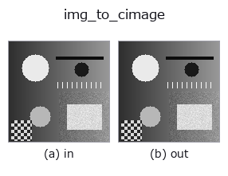

bridge op• Datenarten: image → cimage
• Aufruf: fullseye.apply(img, "img_to_cimage", a=0.5, b=0.5) (das 2-D-Modell ist ein Bild plus zwei skalare Regler a,b∈[0,1])

*Die Abbildung ist die tatsächliche Ausgabe auf einer synthetischen 128×128-Eingabe. Links Eingabe, rechts Ausgabe. Punktwolken als Draufsicht-Streudiagramm (Helligkeit = z), 1-D-Reihen als Linie, Volumen als Maximum-Projektion entlang z, Videos als mittleres Bild, komplexe Bilder als Betrag; Rückgabewerte, die kein Bild ergeben, werden als Werte gezeigt.*
Regler a durchfahren (0,1 / 0,5 / 0,9, der andere Regler auf Standard):
▸ img_to_cimage: knob a sweep (docs site)
Regler b durchfahren (0,1 / 0,5 / 0,9, der andere Regler auf Standard):
▸ img_to_cimage: knob b sweep (docs site)
Auf anderen Bildern (synthetische Szene / Foto / Münzen. Obere Reihe: Eingaben, untere Reihe: deren Ausgaben. Regler auf Standard):
▸ img_to_cimage: other inputs (docs site)
*Die 4. Spalte ist eine Farb-Eingabe (H,W,3). Dieser Op verarbeitet Farbe, ohne Kanäle zu vermischen (er faltet den Farbkanal nicht als dritte Raumachse).*
Nutzt das Bild als Amplitude und eine Phase aus Pixelwert plus Neigung, um ein komplexes Feld (H,W) complex128 zu bauen.
> Die ausführliche Beschreibung unten ist der Originaltext — Zusammenfassung und Überschriften sind übersetzt.
`field = img * exp(i * (2π * a * img + 2π * (b - 0.5) * 8 * x / W))`。
振幅 = 画素値(透過率・開口として読む)、位相は 値に比例する成分(位相物体
としての厚み)と x 方向の線形な傾き(平面波の入射角)の和。角スペクトル法
`tb_angular_spectrum_propagate や tb_cx_*` の族が受ける複素画像の合成器。
• `a → 位相の深さ 2π * a * img`(a=0 で実場、a=0.5 で最大 π)。
• `b → 傾き。(b - 0.5) * 8` 周期ぶんの線形位相を x 方向に掛ける
(b=0.5 で傾き 0。8 は「128 px で 8 縞」の目安)。
• 返り値: `(H, W) complex128。|field| = img、arg` は上式。
• 値 0 の画素は位相が定義できない(`0 * exp(iφ) = 0`)。
• Leitfaden zur Familie gallery2d_bridge
• Katalog der Beispieldaten (Download-URLs / Lizenzen) — 2-D nutzt skimage.data (BSD/Public Domain) plus synthetische Bilder, 3-D nennt Download-URLs echter Datenquellen (Stanford, PDS, …).
• Herkunft und Literatur der Operatoren — die Quellen der Forschung/Verfahren, auf denen diese Operatorfamilie beruht.
• Der kanonische Algorithmus (Autor, Jahr) und seine Anwendungen stehen im Familienleitfaden oben.
Das Programm unten ist nachweislich lauffähig (gleiche Eingabe wie die Abbildung). In der Studio-Hilfe wird dieser Block zu Schaltflächen, die es sofort laden und ausführen.
img_to_cimage 0.50 0.50
▸ Load this pipeline · Load & run
• gallery2d_bridge — py -3.11 examples/gallery2d_bridge.py
cimage als Eingabe)identity · tb_cx_ifft · tb_cx_magnitude · tb_cx_phase · tb_cx_real · tb_cx_imag · tb_cx_log_magnitude · tb_cx_apply_transfer_function
bridge)img_to_points · img_to_keypoints · img_to_signal · img_to_counts · img_to_matrix · img_to_video · img_to_volume · img_to_lightfield
*Provenance: ops.py — 2D Operator-Registry. Diese Notiz wird von tools/opdocs.py md erzeugt (nicht von Hand bearbeiten).*
© 2026 Kazufumi Furuse — Fullseye operator documentation. Licensed under Apache-2.0.
{kind=link}
{kind=link}
{kind=link}